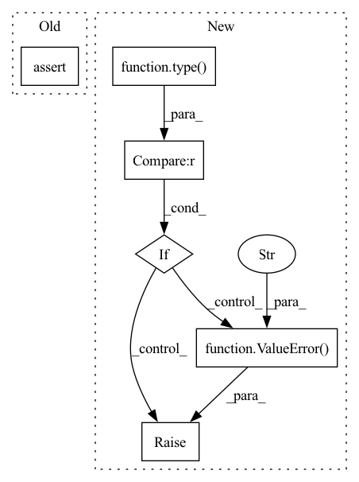

Pattern ID :31301
Before Change
self._student_inputs, self._teacher, check_feat_lab_inp=False
)
assert type(self._student_outputs) == type(
teacher_outputs
), "Student and teacher models must have the same output type"
After Change
teacher_inputs, self._teacher, check_feat_lab_inp=False
)
if type(student_outputs) != type(teacher_outputs) :
raise ValueError(
"Student and teacher models must have the same output type"
)
distill_losses = []
if isinstance(student_outputs, Tensor):
distill_losses.append(In pattern: SUPERPATTERN
Frequency: 6
Non-data size: 6
Instances Fragment ID: 91872555
Project Name: neuralmagic/sparseml
Commit Name: 6a4767337b993070bc55cc0bac99c076ab84cb47
Time: 2021-10-07
Author: tuan@neuralmagic.com
File Name: src/sparseml/pytorch/optim/modifier_distillation.py
M Class Name: DistillationModifier
N Class Name: DistillationModifier
M Method Name: loss_update(8)
N Method Name: loss_update(6)
M Parent Class: ScheduledModifier
N Parent Class: ScheduledModifier
M File Name: src/sparseml/pytorch/optim/modifier_distillation.py
N File Name: src/sparseml/pytorch/optim/modifier_distillation.py
M Start Line: 241
M End Line: 297
N Start Line: 225
N End Line: 290
Before Change
self.img_h, self.img_w, self.img_c = self.img_shape
elif required_arg == "tensor_value_range":
assert isinstance(self.tensor_value_range, list) or isinstance(self.tensor_value_range, tuple)
assert len(self.tensor_value_range) == 2
// set optional parameters
self.action_conditional = model_args.get("action_conditional", False)After Change
// pre-setattr checks
if required_arg == "tensor_value_range":
if type(required_val) not in [tuple, list] or len(required_val) != 2:
raise ValueError("value for argument "tensor_value_range" needs to be tuple or list with 2 elems" )
// set parameter
setattr(self, required_arg, required_val)
Fragment ID: 91872557
Project Name: ais-bonn/vp-suite
Commit Name: 1c3571da20cb42bd260e26e5b031db6a79be0108
Time: 2022-01-21
Author: boltres@ais.uni-bonn.de
File Name: vp_suite/base/base_model.py
M Class Name: VideoPredictionModel
N Class Name: VideoPredictionModel
M Method Name: __init__(2)
N Method Name: __init__(2)
M Parent Class: nn.Module
N Parent Class: nn.Module
M File Name: vp_suite/base/base_model.py
N File Name: vp_suite/base/base_model.py
M Start Line: 34
M End Line: 41
N Start Line: 34
N End Line: 45
Before Change
else:
tmax = t // + self.eps
if Ti is not None:
assert type(Ti) == self.torch_float_datatype
T = Ti
else:
T = tmax * self.scaleAfter Change
else:
tmax = t // + self.eps
if Ti is not None:
if type(Ti) != self.torch_float_datatype :
raise ValueError("Invalid Ti shapes" )
T = Ti
else:
T = tmax * self.scale
gamma = self.alpha - torch.log(self.tol) / (self.scale * T) Fragment ID: 91872556
Project Name: samholt/neurallaplace
Commit Name: 6fe8140cd0c4ac6b1630e136106e894122d81288
Time: 2022-07-04
Author: bogdan.cebere@gmail.com
File Name: torchlaplace/inverse_laplace.py
M Class Name: Fourier
N Class Name: Fourier
M Method Name: compute_s(4)
N Method Name: compute_s(4)
M Parent Class: InverseLaplaceTransformAlgorithmBase
N Parent Class: InverseLaplaceTransformAlgorithmBase
M File Name: torchlaplace/inverse_laplace.py
N File Name: torchlaplace/inverse_laplace.py
M Start Line: 1140
M End Line: 1140
N Start Line: 1142
N End Line: 1144
Before Change
else:
tmax = tv
if Ti is not None:
assert type(Ti) == self.torch_float_datatype
T = Ti
else:
T = tmax * self.scaleAfter Change
else:
tmax = tv
if Ti is not None:
if type(Ti) != self.torch_float_datatype :
raise ValueError("Invalid Ti type" )
T = Ti
else:
T = tmax * self.scale
gamma = self.alpha - torch.log(self.tol) / (self.scale * T) Fragment ID: 91872558
Project Name: samholt/neurallaplace
Commit Name: 6fe8140cd0c4ac6b1630e136106e894122d81288
Time: 2022-07-04
Author: bogdan.cebere@gmail.com
File Name: torchlaplace/inverse_laplace.py
M Class Name: DeHoog
N Class Name: DeHoog
M Method Name: compute_s(4)
N Method Name: compute_s(4)
M Parent Class: InverseLaplaceTransformAlgorithmBase
N Parent Class: InverseLaplaceTransformAlgorithmBase
M File Name: torchlaplace/inverse_laplace.py
N File Name: torchlaplace/inverse_laplace.py
M Start Line: 717
M End Line: 717
N Start Line: 717
N End Line: 719
Before Change
else:
tmax = t
if Ti is not None:
assert type(Ti) == self.torch_float_datatype
T = Ti
else:
T = tmax * self.scaleAfter Change
else:
tmax = t
if Ti is not None:
if type(Ti) != self.torch_float_datatype :
raise ValueError("Invalid Ti types" )
T = Ti
else:
T = tmax * self.scale
gamma = self.alpha - torch.log(self.tol) / (self.scale * T) Fragment ID: 91872560
Project Name: samholt/neurallaplace
Commit Name: 6fe8140cd0c4ac6b1630e136106e894122d81288
Time: 2022-07-04
Author: bogdan.cebere@gmail.com
File Name: torchlaplace/inverse_laplace.py
M Class Name: DeHoog
N Class Name: DeHoog
M Method Name: forward(5)
N Method Name: forward(5)
M Parent Class: InverseLaplaceTransformAlgorithmBase
N Parent Class: InverseLaplaceTransformAlgorithmBase
M File Name: torchlaplace/inverse_laplace.py
N File Name: torchlaplace/inverse_laplace.py
M Start Line: 919
M End Line: 919
N Start Line: 920
N End Line: 922
Before Change
else:
tmax = t
if Ti is not None:
assert type(Ti) == self.torch_float_datatype
T = Ti
else:
T = tmax * self.scaleAfter Change
else:
tmax = t
if Ti is not None:
if type(Ti) != self.torch_float_datatype :
raise ValueError("Invalid Ti type" )
T = Ti
else:
T = tmax * self.scale
gamma = self.alpha - torch.log(self.tol) / (self.scale * T) Fragment ID: 91872563
Project Name: samholt/neurallaplace
Commit Name: 6fe8140cd0c4ac6b1630e136106e894122d81288
Time: 2022-07-04
Author: bogdan.cebere@gmail.com
File Name: torchlaplace/inverse_laplace.py
M Class Name: Fourier
N Class Name: Fourier
M Method Name: forward(5)
N Method Name: forward(5)
M Parent Class: InverseLaplaceTransformAlgorithmBase
N Parent Class: InverseLaplaceTransformAlgorithmBase
M File Name: torchlaplace/inverse_laplace.py
N File Name: torchlaplace/inverse_laplace.py
M Start Line: 1273
M End Line: 1273
N Start Line: 1276
N End Line: 1278